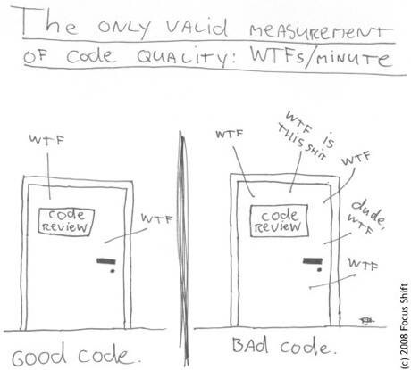

<!doctype html>
<html lang="en">
    <head>
        <meta charset="utf-8">
        <title>Your Code Won't Clean Itself!</title>
        <meta name="author" content="Shawn Sparks">
        <link rel="stylesheet" href="reveal.js-3.2.0/css/reveal.css">
		<link rel="stylesheet" href="reveal.js-3.2.0/css/theme/night.css" id="theme">
        <!-- Code syntax highlighting -->
		<link rel="stylesheet" href="revealjs-2.6.2/lib/css/zenburn.css">
    </head>
    <body>
        <div class="reveal">
            <div class="slides">
                <section data-markdown data-separator="\n\n\n">
                    <script type="text/template">
                        # Your Code Won't Clean Itself!


                        ## Who Am I?
                        Shawn Sparks<br/>
                        [@marshmellow1328](https://twitter.com/marshmellow1328)<br/>
                        https://github.com/marshmellow1328

                        https://marshmellow1328.github.io/clean-code/


                        ### My Formal Background
                        * UNI Graduate 2009
                            * Computer Science
                            * History
                        * Principal Financial Group
                            * Java Developer
                            * Architect


                        ### My Fun Background
                        * LAMP Past
                        * Docker + MEAN Stack
                        * Hackathons


                        ## Who Are You?


                        ### Skill Level?
                        * Learning the basics?<!-- .element: class="fragment" data-fragment-index="1" -->
                        * Project work?<!-- .element: class="fragment" data-fragment-index="2" -->
                        * More?<!-- .element: class="fragment" data-fragment-index="3" -->
                        * Just Awesome?<!-- .element: class="fragment" data-fragment-index="4" -->


                        ### Primary Language?
                        * Java?<!-- .element: class="fragment" data-fragment-index="1" -->
                        * Python?<!-- .element: class="fragment" data-fragment-index="2" -->
                        * PHP?<!-- .element: class="fragment" data-fragment-index="3" -->
                        * JavaScript?<!-- .element: class="fragment" data-fragment-index="4" -->
                        * Others?<!-- .element: class="fragment" data-fragment-index="5" -->


                        ### Programming Paradigm?
                        * Object-Oriented?<!-- .element: class="fragment" data-fragment-index="1" -->
                        * Functional?<!-- .element: class="fragment" data-fragment-index="2" -->
                        * No Idea?<!-- .element: class="fragment" data-fragment-index="3" -->


                        ### Size of Code Base Experience?
                        * < 1k LOC?<!-- .element: class="fragment" data-fragment-index="1" -->
                        * 1k-5k LOC?<!-- .element: class="fragment" data-fragment-index="2" -->
                        * Bigger? How Big?<!-- .element: class="fragment" data-fragment-index="3" -->


                        ### My Answers
                        * 10+ years of coding (~6 formal)
                        * Java or JavaScript (Used ~9 languages?)
                        * OO w/ some functional
                        * 120k LOC


                        ## What's Clean Code?
                        


                        ## What's Clean Code?
                        * Easy to Understand<!-- .element: class="fragment" data-fragment-index="1" -->
                        * Easy to Maintain<!-- .element: class="fragment" data-fragment-index="2" -->
                        * Testable<!-- .element: class="fragment" data-fragment-index="3" -->


                        ## Why Do We Care?
                        * 50-75% Life of Software is Maintenance [<sup>[1]</sup>](http://stackoverflow.com/questions/3477706/development-cost-versus-maintenance-cost)[<sup>[2]</sup>](http://programmers.stackexchange.com/questions/47991/where-is-this-from-originally-80-of-the-lifetime-cost-of-a-piece-of-softwa)
                        * Cost of Rewrites
                        * More time reading than writing (10:1 according to Uncle Bob)


                        ## Clean Code
                        More like guidelines than rules


                        ### Guiding Questions
                        * Is this adding value?
                        * Will I understand this in 6 months?
                        * Can someone else understand this? (Ask someone else!)


                        ### Names
                        * Meaningful
                        * Pronounceable
                        * Enough to be Clear
                        * Nothing More
                        * Magic Literals

                        <a href="examples/names.js" target="_blank">Examples</a>


                        ### Comments
                        * Problems w/ Comments
                            * Redundant
                            * Misleading or Out of Date
                        * Adding value?
                        * Do you really understand the problem?
                        * Considerations before Commenting
                            * Better names
                            * Helper functions

                        <a href="examples/comments.js" target="_blank">Examples</a>


                        ### Functions
                        * Length: <10 LOC
                            * [Function Decomposition](https://en.wikipedia.org/wiki/Decomposition_(computer_science&#41;)
                            * Helper Methods
                        * Number of Params: <4
                            * [Builder Pattern](https://en.wikipedia.org/wiki/Builder_pattern)
                            * [Command Pattern](https://en.wikipedia.org/wiki/Command_pattern)
                        * Do One Thing!
                            * [Single Responsibility Principle](https://en.wikipedia.org/wiki/Single_responsibility_principle)
                        * Don't Repeat Yourself [(DRY)](https://en.wikipedia.org/wiki/Don%27t_repeat_yourself)

                        <a href="examples/functions-bad.js" target="_blank">Bad Example</a> => <a href="examples/functions-good.js" target="_blank">Good Example</a>


                        ### Conditionals
                        * Needed? [Example](examples/conditionals-unnecessary.js)
                        * Move complex rules to named methods [Example](examples/conditionals-helper.js)


                        ## How to Keep Code Clean?


                        ### Boyscout Rule
                        "Leave the code cleaner than you found it"


                        ### Code Review
                        * Ask someone what they think
                        * Pull requests


                        ### Automated Tools
                        * Java
                            * Checkstyle
                            * PMD
                            * FindBugs
                        * JavaScript
                            * jshint
                            * jscs
                        * Sonar


                        ## Summary
                        * Names Matter
                        * Functions should be short
                        * Functions should do one thing
                        * Boyscout Rule


                        ## References
                        <br>
                        [Clean Code by Robert C. Martin](http://www.amazon.com/Clean-Code-Handbook-Software-Craftsmanship/dp/0132350882)


                        ## Additional Good Sources
                        * Martin Fowler
                            * [martinfowler.com](http://martinfowler.com)
                            * [@martinfowler](https://twitter.com/martinfowler)
                        * Uncle Bob (Robert C. Martin) - [@unclebobmartin](https://twitter.com/unclebobmartin)
                        * Kent Beck - [@KentBeck](https://twitter.com/KentBeck)
                        * [Design Patterns](http://www.amazon.com/Design-Patterns-Elements-Reusable-Object-Oriented/dp/0201633612) "Gang of Four Book"


                        ## Questions?
                    </script>
                </section>
            </div>
        </div>

        <script src="reveal.js-3.2.0/lib/js/head.min.js"></script>
        <script src="reveal.js-3.2.0/js/reveal.js"></script>
        <script type="text/javascript">
            Reveal.initialize(
                {
                    history: true,
                    dependencies: [
                        {
                            src: 'reveal.js-3.2.0/plugin/markdown/marked.js',
                            condition: function() { return !!document.querySelector( '[data-markdown]' ); }
                        },
                        {
                            src: 'reveal.js-3.2.0/plugin/markdown/markdown.js',
                            condition: function() { return !!document.querySelector( '[data-markdown]' ); }
                        },
                        {
                            src: 'revealjs-2.6.2/plugin/highlight/highlight.js',
                            async: true,
                            condition: function() { return !!document.querySelector( 'pre code' ); },
                            callback: function() { hljs.initHighlightingOnLoad(); }
                        }
                    ]
                }
            );
        </script>
    </body>
</html>
